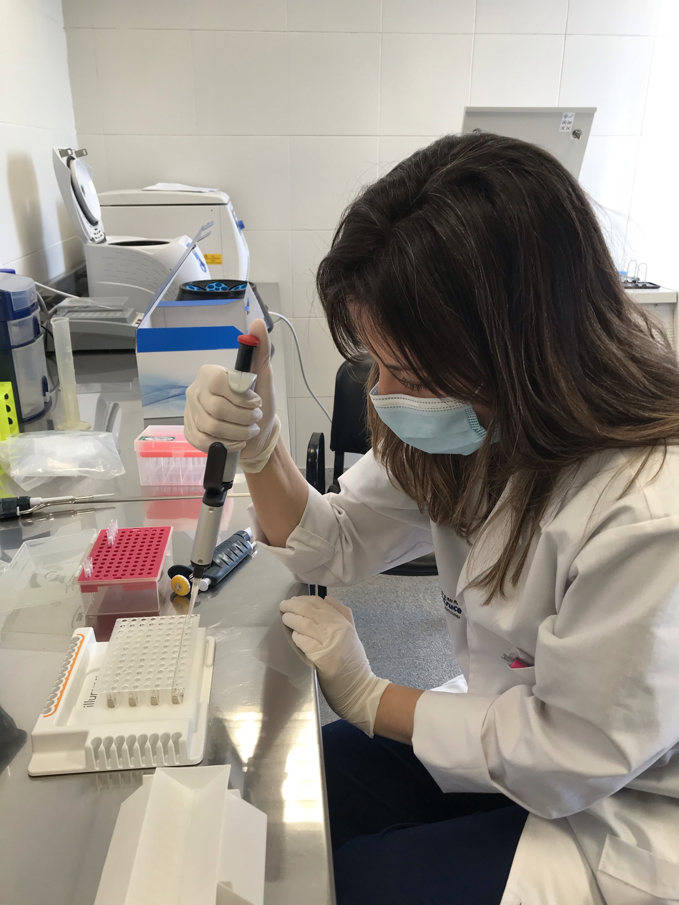

Un equipo con vocación de servicio
Combinando experiencia, ambición y compromiso

Dra. Marilina Rahhal
- 📍 General Alvear, Prov. Buenos Aires.
- 🎓 Egresada de la UNLP
- 🏥 Residencia y Jefatura en el Hospital San Roque de Gonnet
- 💼 Coordinadora del Área de BIOLOGÍA MOLECULAR

Tec. Facundo Albarenque
- 📍 Luis Guillón, Prov. Buenos Aires.
- 🎓 Egresado del Instituto Superior de Tecnicaturas para la salud Gob. CABA
- 🏥 Experiencia en CentralLab
- 💼 Domina las técnicas de extracción de ácidos nucleicos

Bioq. Alan Gomez
- 📍 Claypole, Prov. Buenos Aires.
- 🎓 Egresado de la UNLP
- 🏥 Residencia y e Instructor en el Hospital El Cruce
- 💼 Desempeño actual en Virología

Bioq. Gastón Montecino
- 📍 Plaza Huincul, Neuquén.
- 🎓 Egresado de la UNLP
- 🏥 Residencia y Jefatura en el Hospital El Cruce
- 💼 Desempeño actual en Oncohematología